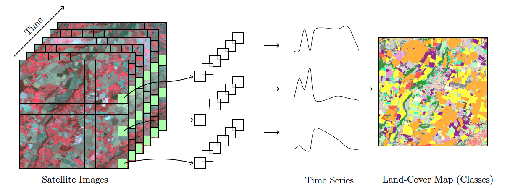
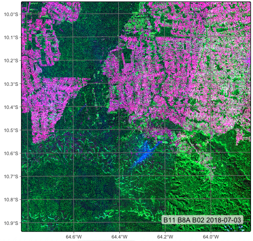

6 Earth observation data cubes
Configurations to run the chapter
6.1 Working with satellite image time series
Satellite imagery provides the most extensive data on our environment. By encompassing vast areas of the Earth’s surface, satellite images enable researchers to analyze local and worldwide transformations. By observing the same location multiple times, satellites provide data on environmental changes and survey areas that are difficult to observe from the ground. Given its unique features, images offer essential information for many applications, including deforestation, crop production, food security, urban footprints, water scarcity, and land degradation. Using time series, experts improve their understanding of ecological patterns and processes. Instead of selecting individual images from specific dates and comparing them, researchers track change continuously [1]. Combined with Earth observation data cubes, time series are a powerful tool for monitoring change, providing insights and information that single snapshots cannot achieve. Time series analysis are a new and exciting paradigm.
6.1.1 Time-first, space-later
“Time-first, space-later” is a concept in satellite image classification that takes time series analysis as the first step for analyzing remote sensing data, with spatial information being considered after all time series are classified. The time-first part brings a better understanding of changes in landscapes. Detecting and tracking seasonal and long-term trends becomes feasible, as well as identifying anomalous events or patterns in the data, such as wildfires, floods, or droughts. Each pixel in a data cube is treated as a time series, using information available in the temporal instances of the case. Time series classification is pixel-based, producing a set of labeled pixels. This result is then used as input for the space-later part of the method. In this phase, a smoothing algorithm improves the results of the time-first classification by considering the spatial neighborhood of each pixel. The resulting map thus combines both spatial and temporal information.

6.2 Regular Earth observation data cubes
Analysis Ready Data (ARD) collections are often irregular in space and time. Bands may have different resolutions, images may not cover entire tiles, and time intervals are inconsistent. Clouds and sensor artifacts introduce “holes” in the data, corrupting the time series. If time steps differ or values are missing, batch training breaks and the model learns spurious correlations. Machine learning and deep learning (ML/DL) classification algorithms require the input data to be consistent. The dimensionality of the data used for training the model has to be the same as that of the data to be classified. There should be no gaps and no missing values. Thus, to use ML/DL algorithms for remote sensing data, ARD image collections should be converted to regular data cubes.
A regular EO data cube is a partition of the Earth’s surface which covers the area in periodic intervals. Regular data cubes are derived by ARD images by filling coverage gaps, accounting for cloud coverage, and reprocessing irregular temporal coverage to regular periods. Also, regular data cubes can cover more than a single coordinate projection zone, so as to be defined in large areas.
We propose the following properties for regular data cubes:
- A regular data cube is a set of three-dimensional arrays with two spatial dimensions and one temporal dimension. Each array contains cells which have the same spatial resolution, the same temporal duration, and the same set of attributes (spectral bands and/or indices).
- The number of dimensions is fixed (2D + time), while the number of attributes is not limited.
- The spatial dimensions are associated to a coordinate projection system, such as the MGRS grid (Military Grid Reference System). A tile of the grid corresponds to a unique zone of the coordinate system. A data cube may span various tiles and projection zones.
- The temporal dimension is a set of continuous and equally spaced intervals.
- For each position in space, the cube should provide a multi-attribute time series. For each time interval, the cube should provide a multi-attribute 2D image (see Figure 6.2).

6.2.1 Generating regular data cubes
Currently, the only cloud service that provides regular data cubes by default is the Brazil Data Cube (BDC). ARD collections available in other cloud services are not regular in space and time. Bands may have different resolutions, images may not cover the entire timeline, and time intervals may be irregular. For this reason, subsets of these collections need to be converted into regular data cubes before further processing. To produce data cubes for machine learning data analysis, this chpater of describes the steps involved in producing and using regular data cubes:
- Obtaining data from ARD image collections
- Producing regular data cubes from single- and multi-source data
- Performing operations on data cubes
To convert data from ARD collections into regular data cubes we need two operations:
Spatial harmonization: reproject and resample everything onto the same tiling system and spatial resolution. For example, to regularize Sentinel-2 images, it is required to merge the 10-meter bands with the 20-meter bands. Users need to select a single resolution for the regular cube.
Temporal harmonization: create equispaced intervals (e.g., 16-day, monthly, or seasonal composites), filling gaps introduced by cloud cover and sensor errors. There are two main options: (a) choosing a median value for each pixel in the time interval; or (b) sorting images in increasing order of cloud cover percentage. In the latter case, the least cloud-filled image is taken as a reference, and the others are used to try to fill its gaps. Pixels with persistent cloud cover are marked as
NAand are temporally interpolated during computation.
6.2.2 Obtaining data from ARD image collections
The following example shows how to produce a regular data cube using the R sits package. First, we retrive a set of images cube from the Sentinel-2 collection available in Microsoft’s Planetary Computer (MPC). The area lies within the state of Rondônia, Brazil, and is defined by the MGRS tiles 20LKP and 20LLP.
# Retrieving a non-regular ARD collection from AWS
s2_cube_rondonia <- sits_cube(
source = "AWS",
collection = "SENTINEL-2-L2A",
tiles = c("20LLP", "20LKP"),
bands = c("B02", "B8A", "B11", "CLOUD"),
start_date = as.Date("2018-06-30"),
end_date = as.Date("2018-08-31")
)
# Show the different timelines of the cube tiles
sits_timeline(s2_cube_rondonia)$`20LKP`
[1] "2018-07-03" "2018-07-08" "2018-07-13" "2018-07-18" "2018-07-23"
[6] "2018-07-28" "2018-08-02" "2018-08-07" "2018-08-12" "2018-08-17"
[11] "2018-08-22" "2018-08-27"
$`20LLP`
[1] "2018-06-30" "2018-07-03" "2018-07-05" "2018-07-08" "2018-07-10"
[6] "2018-07-13" "2018-07-15" "2018-07-18" "2018-07-20" "2018-07-23"
[11] "2018-07-25" "2018-07-28" "2018-07-30" "2018-08-02" "2018-08-04"
[16] "2018-08-07" "2018-08-09" "2018-08-12" "2018-08-14" "2018-08-17"
[21] "2018-08-19" "2018-08-22" "2018-08-24" "2018-08-27" "2018-08-29"
Different satellites—even those within the same mission, such as Sentinel-2A and Sentinel-2B—follow slightly different orbits and acquire data at different times. Due to factors such as the Earth’s rotation and the lack of perfect alignment between Earth’s orbit and the satellites’ paths, some regions are not observed by both satellites during each orbital cycle. As a result, image acquisition timelines can differ between tiles.
In our example, tile 20LKP has twelve images within the selected time period, while tile 20LLP has twenty-four. To harmonize these differences, we show and an example of the sits_regularize() function in the R sits package, which builds a data cube with a regular timeline and estimates the best available pixel value for each time interval.
# set output dir for ARD data if it does not exist
tempdir_r_s2 <- "~/sitsbook/tempdir/R/dc_regularize/s2"
dir.create(tempdir_r_s2, showWarnings = FALSE, recursive = TRUE)
s2_cube_local <- sits_cube_copy(
cube = s2_cube_rondonia,
output_dir = tempdir_r_s2
)
# set output dir fir regular cube if it does not exist
tempdir_r_s2_reg <- "~/un_handbook/tempdir/R/dc_regularize/s2_reg"
dir.create(tempdir_r_s2_reg, showWarnings = FALSE, recursive = TRUE)
# Regularize the cube to 16-day intervals
reg_cube_rondonia <- sits_regularize(
cube = s2_cube_local,
output_dir = tempdir_r_s2_reg,
res = 40,
period = "P16D",
multicores = 6)
# Plot tile 20LLP of the regularized cube with the least cloud cover
# The pixels of the regular data cube cover the full MGRS tile
plot(reg_cube_rondonia, tile = "20LLP")
6.3 Summary
In this chapter, we learned how to produce regular Earth observation (EO) data cubes from non-regular subsets of ARD collections. Regularization is a key operation when working with time series, as it enables the use of machine learning models on temporally aligned data.